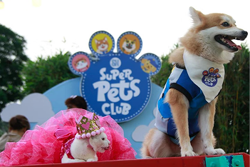

Pets, cattle seen beefing up
demand for feeds
BARMM coops get zero-
interest agri-fishery loans
FAQ: Tackling
water scarcity
requires speed,
scale and
determination
water scarcity
requires speed,
scale and
determination
PHL buys US soybean meal at
lower prices
Job opportunities expand as new law
requires agriculturists nationwide
Corn imports
seen falling on
low feed
demand
seen falling on
low feed
demand
SRA raises alarm: RSSI, sugarcane pest,
invades Negros Occidental plantations
From wind to wafers: What PHL
can learn from Inner Mongolia
Palawan
planters shift to
organic farming
—DAR
planters shift to
organic farming
—DAR
State rice buffer stock for next
year to cost ₱27 billion—NFA

‘New policy averts spikes in
canned food prices’
Europe’s dry
spring raises
fears for wheat
and barley
harvests
spring raises
fears for wheat
and barley
harvests